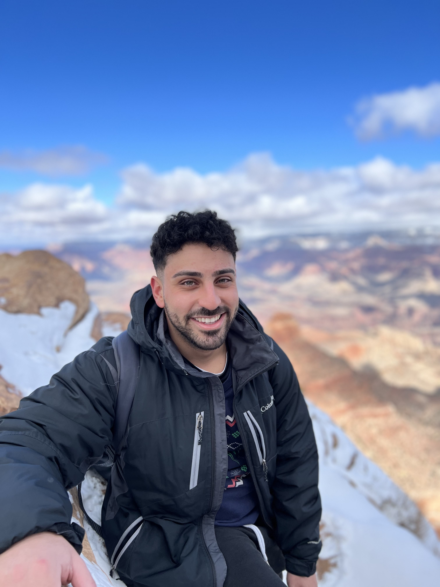

About Me

A Lil' Intro:
Hiya, my name is Mina Barsoum and I am for real lost lol. I spent the last 26 years trying to figure out what I want to do and who I want to be and I think I figured it out. And then I spent the last 4 years running from that answer. So here I am, trying to make something out of my creative self and not waste more time (your boy is washed). Life is hard for me these days but I don't know, this is an attempt at doing something right. Wish me luck. Hopefully these look prettier as time goes on.
Interests:
I am a GEEEEEK.
Avatar:
My favorite show of all-time is Avatar: The Last Airbender(ATLA for the veterans) and I could tell you more about that show than the creators themselves. I even bought a Kalimba so I could try to recreate the music from the show. I actually just watched the 20th anniversay orchestral concert and I can honestly say I peaked. I don't really think life gets any better than that.
AND SOKKA IS MY GOATTTT. I think I lowkey modeled my entire personality off of him lol.
Spider-Man:
This might be my favorite character of all time. I've seen literally every version of him in every piece of media to ever exist. I love the story to death and it was actually the first movie I ever saw in theaters so it holds a special place in my heart. Shout out to Tobey Maguire, my first ever spidey and Andrew Garfield who gets no love but is clearly the best actor out of all them. And shout out to SPECTACULAR SPIDER-MAN, the best spidey cartoon of all time
Anime:
I also love anime. Shout out to:
- Naruto (Might Guy is genuinely my king)
- Attack on Titan (craziest writing I've seen)
- Steins Gate (best time travel in anime by far)
- JJK (animation and fights = bananas)
- Death Note (up until halfway, funnest chess match you'll ever watch)
Cartoons:
I got a long list. I was a biggg Nick, CartoonNetwork, and Disney kid so here goes:
- ATLA
- Danny Phantom
- Jimmy Neutron
- Fairly Odd Parents
- Spongebob
- Hey Arnold
- Rugrats
- Rocket Power
- Hey Arnold
- Ben 10
- Teen Titans
- Powerpuff Girls
- Grim Adventures of Billy and Mandy
- Codename: Kids Next Door
- Courage the Cowardly Dog
- Ed, Edd n Eddy
- Johhny Bravo
- Dexter's Laboratory
- Samurai Jack
- Static Shock
- Lilo & Stitch
- American Dragon: Jake Long
Sports and Physical:
I played basketball for pretty much my entire life but these days I mainly gym and run these days. But I did muay thai for a bit and I want to get back to it (to be the rock lee I know I can be).
Le Arts
I've also loved movies and cartoons and my dream is to make either. I want to do it so bad. But these days, I try and write whenever I can. I used to have this cool blog I made in college for a class that maybe I'll link below. I also started a youtube channel last year which I should definitely link below. And I was also taking singing lessons for a few years which I LOVED and I want to get back into as well.
Donec euismod vestibulum arcu, a blandit metus mattis ultrices. Integer quis hendrerit justo. Maecenas sed tempor mi.
Fusce egestas urna leo. Mauris viverra sem sed libero egestas, volutpat aliquet magna porta. Quisque id diam sed ipsum
interdum sollicitudin id quis augue. Donec congue nisl nec massa ornare imperdiet quis quis odio. Etiam ut volutpat
nisl. Vestibulum hendrerit justo nibh, eget consequat magna fermentum finibus. Pellentesque et urna fringilla, rutrum
neque in, varius leo. Vestibulum efficitur id massa eget pellentesque.